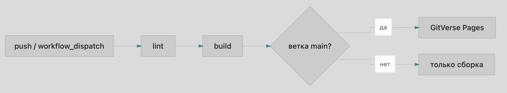
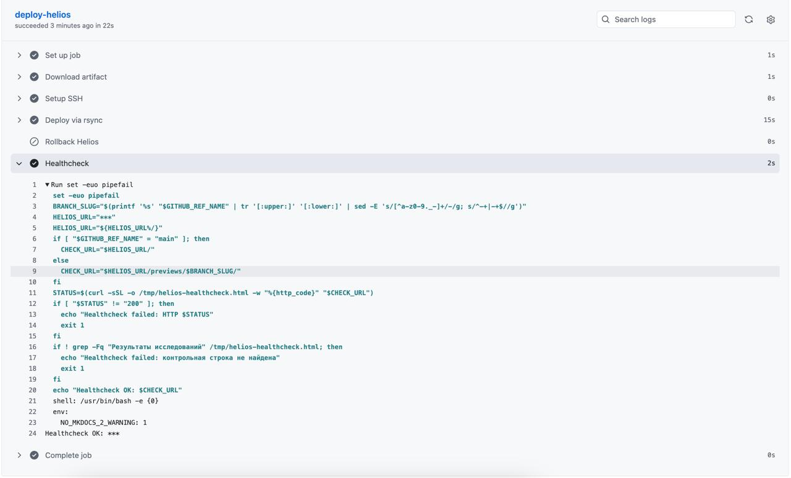
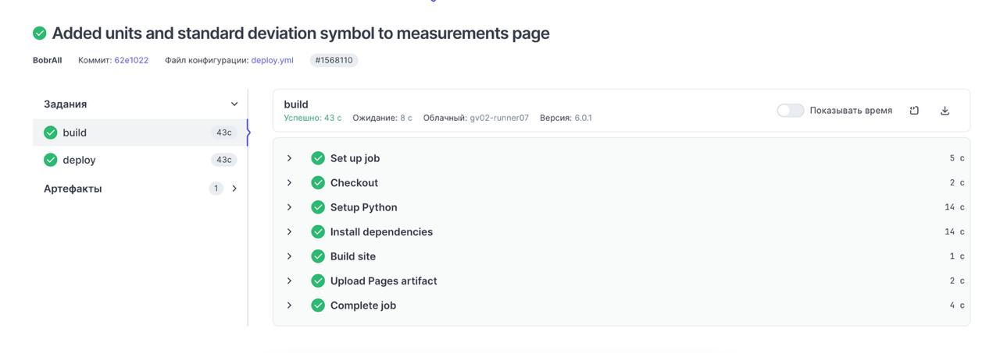
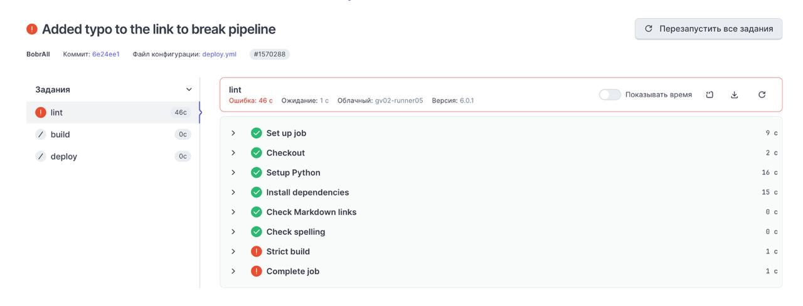
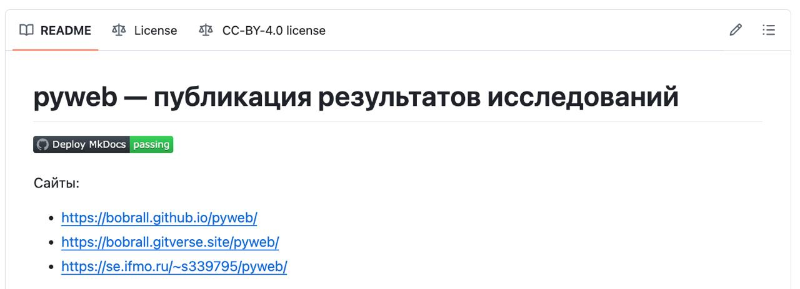

P1. CI/CD-пайплайн на отечественном сервисе¶
Реализация¶
Для публикации на отечественном сервисе выбран GitVerse Pages. Основной файл пайплайна находится в .gitverse/workflows/deploy.yml; для сопоставления используется аналогичный GitHub Actions workflow .github/workflows/deploy.yml.
GitVerse pipeline разделён на три job: lint, build, deploy.
| Job | Назначение | Входные данные | Артефакты и результат | Зависимость |
|---|---|---|---|---|
lint |
Проверка ссылок, орфографии и строгая сборка | Репозиторий, requirements.txt, docs/, README.md |
Ошибка при битой ссылке, ошибке орфографии или warning в mkdocs build --strict |
Нет |
build |
Повторяемая сборка сайта на чистом раннере | Исходники после успешного lint, pip cache |
Pages artifact из каталога site/ |
lint |
deploy |
Публикация в GitVerse Pages | Pages artifact | Обновлённый сайт GitVerse Pages | build, только main |
Порядок выполнения:

События запуска¶
| Событие | Ветка | Поведение |
|---|---|---|
push |
main |
Выполняются lint, build, затем deploy в GitVerse Pages |
push |
Любая другая ветка | Выполняются lint и build; публикация пропускается условием gitverse.ref == 'refs/heads/main' |
workflow_dispatch |
Выбранная ветка | Запускается ручная проверка и сборка; публикация выполняется только для main |
Такое разделение снижает риск случайной публикации экспериментальной ветки: проверка воспроизводимости выполняется для всех изменений, но внешний сайт обновляется только из основной ветки.
Воспроизводимость и кэш¶
В обоих пайплайнах фиксируется версия Python 3.13, а зависимости ставятся из requirements.txt. Это позволяет поднять окружение на чистом runner без локальных файлов виртуального окружения.
| Проверка | Реализация |
|---|---|
| Версия Python | actions/setup-python с python-version: '3.13' |
| Версии пакетов | requirements.txt |
| Строгая сборка | mkdocs build --strict |
| Кэш зависимостей | actions/cache/restore для ~/.cache/pip в GitVerse, cache: pip в GitHub Actions |
| Замеры времени | Страница report/measurements.md, workflow measure.yml |
Секреты¶
Секреты хранятся в настройках платформы и не попадают в репозиторий. Для GitHub/Helios используются HELIOS_SSH_KEY, HELIOS_KNOWN_HOSTS, HELIOS_USER, HELIOS_HOST, HELIOS_PORT, HELIOS_PATH, HELIOS_URL. Для GitVerse Pages публикация выполняется встроенным механизмом Pages без добавления секретов в исходный код.
На скриншоте видно, что значения секретов в логе замаскированы и отображаются как ***.

Успешный запуск¶
Успешный запуск проходит все стадии: проверку, сборку и публикацию.

Намеренно проваленный запуск¶
Для проверки strict-режима была добавлена намеренно битая ссылка index7.md в навигацию. Лог показывает, что MkDocs нашёл предупреждение:
WARNING - A reference to 'index7.md' is included in the 'nav' configuration, which is not found in the documentation files.
Aborted with 1 warnings in strict mode!
Process completed with exit code 1.
Причина падения: в режиме mkdocs build --strict любое предупреждение считается ошибкой сборки. Это важно для CI: сайт не публикуется, если навигация указывает на несуществующую страницу.

Badge статуса¶
В README добавлен badge GitHub Actions:

GitVerse Pages на момент выполнения работы не предоставляет штатный публичный endpoint для badge статуса pipeline, совместимый с Markdown-бейджами README. Поэтому для требования о badge использован GitHub Actions badge, а статус GitVerse подтверждается скриншотами pipeline в отчёте.
Сравнение GitHub Actions и GitVerse¶
| Критерий | GitHub Actions | GitVerse pipeline |
|---|---|---|
| Файл workflow | .github/workflows/deploy.yml |
.gitverse/workflows/deploy.yml |
| Синтаксис | GitHub Actions YAML | Близкий к GitHub Actions синтаксис |
| Триггеры | push по всем веткам, workflow_dispatch с параметрами rollback |
push по всем веткам, workflow_dispatch |
| Проверка | В текущем GitHub workflow совмещена со сборкой mkdocs build --strict |
Выделена отдельная стадия lint: ссылки, codespell, strict build |
| Сборка | build создаёт Pages artifact и отдельный artifact site для Helios |
build создаёт Pages artifact для GitVerse Pages |
| Деплой основной ветки | deploy-pages публикует GitHub Pages только из main |
deploy-pages публикует GitVerse Pages только при gitverse.ref == 'refs/heads/main' |
| Деплой дополнительных веток | Для GitHub Pages не выполняется; Helios публикует preview-подкаталоги | Не выполняется, остаётся только сборка |
| Кэш pip | Встроенный cache: pip в setup-python |
Явный actions/cache/restore по ключу от requirements.txt |
| Секреты | Нужны для Helios deploy и healthcheck | Для Pages deploy секреты в файле workflow не нужны |
| Badge | Поддерживается стандартной ссылкой /actions/workflows/.../badge.svg |
Штатный Markdown badge не поддержан, приложен скрин статуса |
| Rollback | Реализован для Helios через workflow_dispatch |
Не реализован для GitVerse Pages |
Изменения при переносе с GitHub Actions на GitVerse оказались умеренными: структура job и большинство actions сохранились, но условия публикации пришлось записать через контекст gitverse.ref, а GitHub-специфичную часть Pages/Helios разделить с GitVerse Pages. Также badge нельзя перенести напрямую, потому что GitVerse не предоставляет совместимый badge URL.